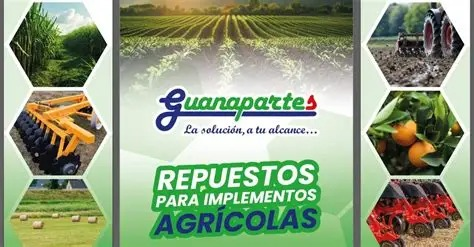
BIENVENIDOS A GUANAPARTES
La solución,
a tu alcance.
Repuestos para tu maquinaria e implementos agrícolas, con la atención que necesitas para encontrar la pieza adecuada.
QUIÉNES SOMOS
Repuestos y soluciones para tu maquinaria
En Guanapartes S.A. comercializamos repuestos para maquinaria e implementos agrícolas. Desde Cañas, Guanacaste, atendemos las necesidades de nuestros clientes con confianza, responsabilidad y seriedad.
Te acompañamos en la búsqueda de soluciones para tus equipos y herramientas de trabajo.
Consulta nuestro catálogoREPUESTOS PARA TU MAQUINARIA
Marcas con las que trabajamos
Encuentra el repuesto que necesitas y consulta su compatibilidad con tu equipo.
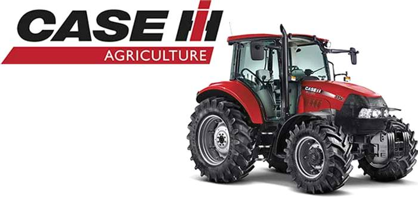
Case
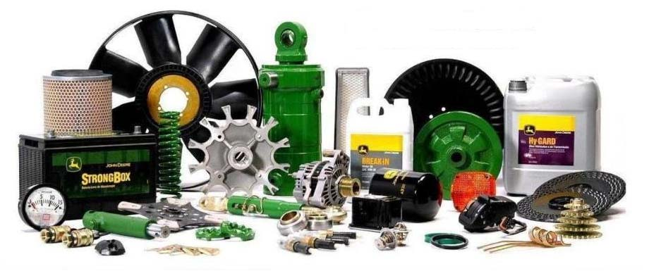
John Deere
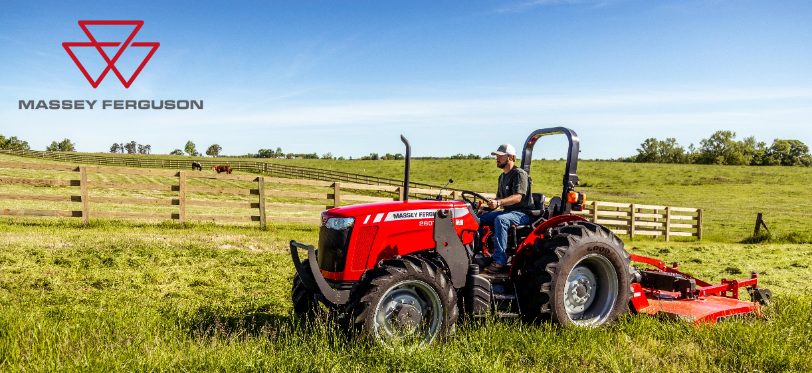
Massey Ferguson
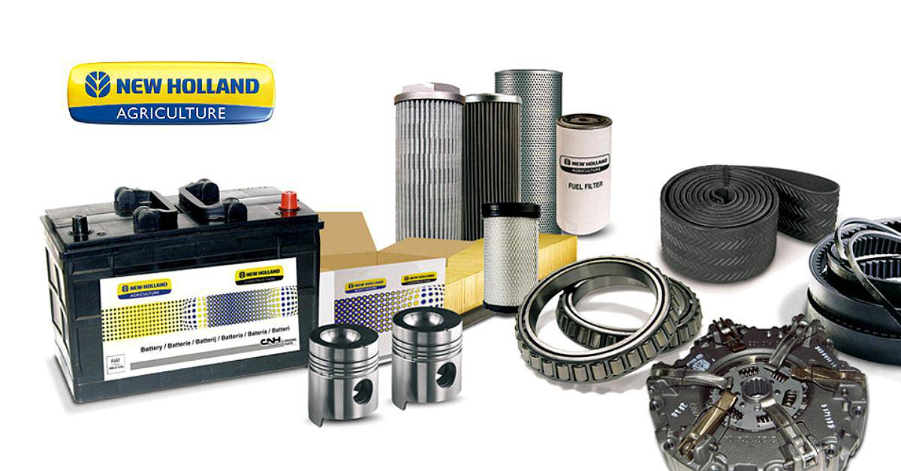
New Holland
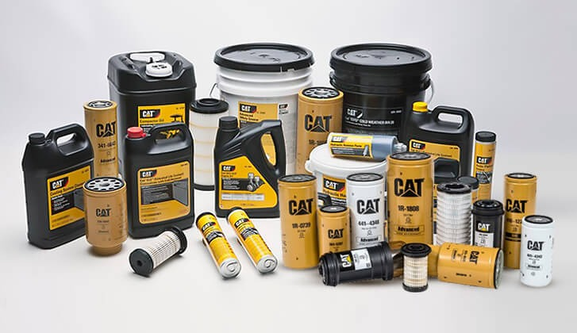
CAT
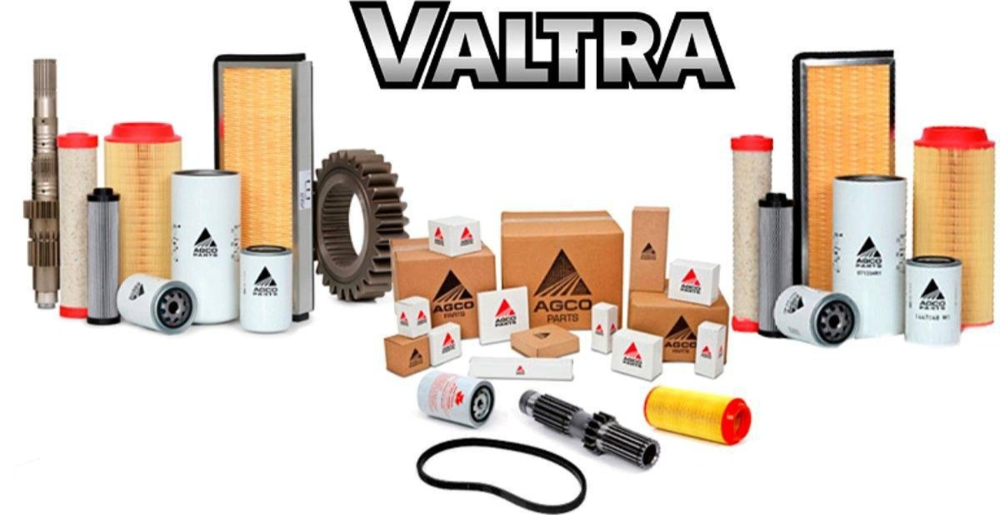
Valtra
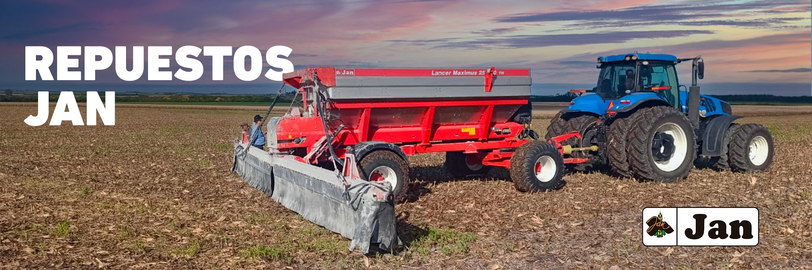
JAN
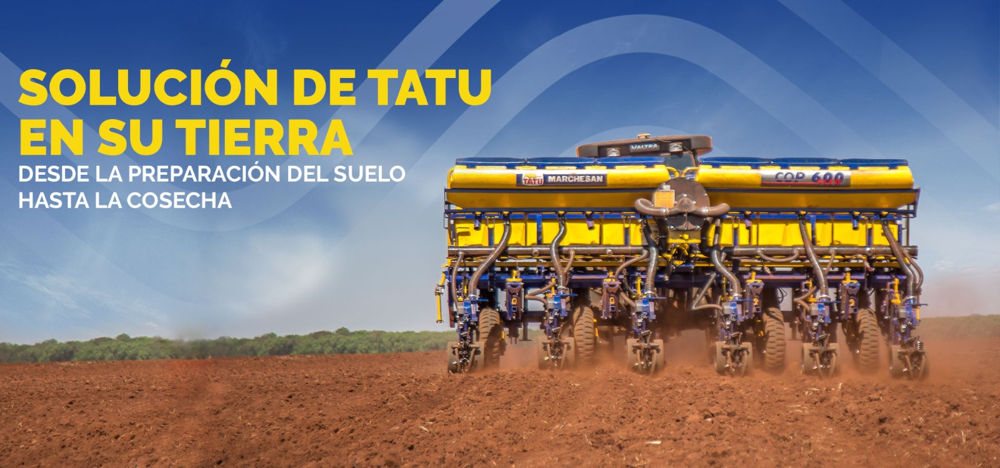
Tatu Marchesan
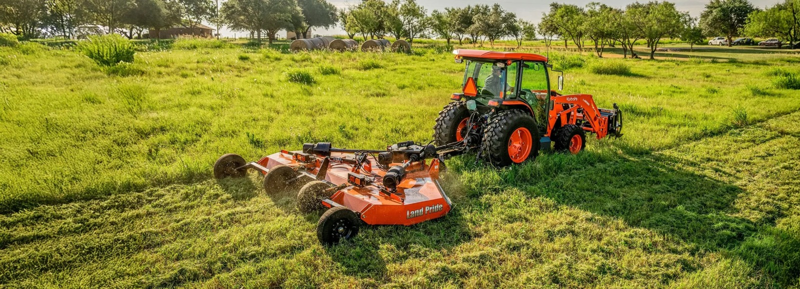
Land Pride
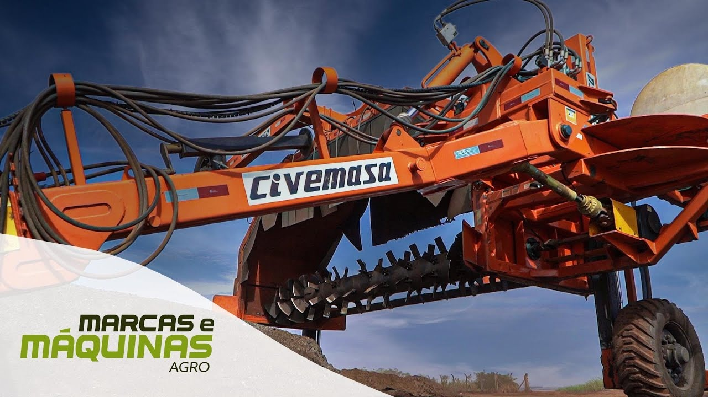
Civemasa
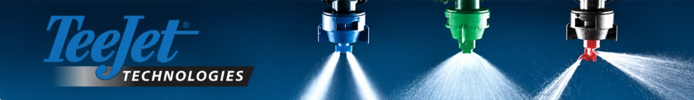
Teejet
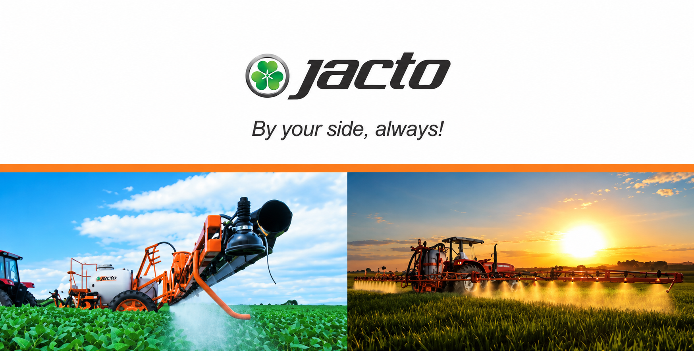
Jacto
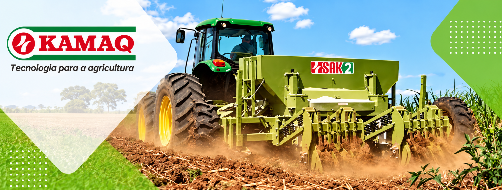
Kamaq
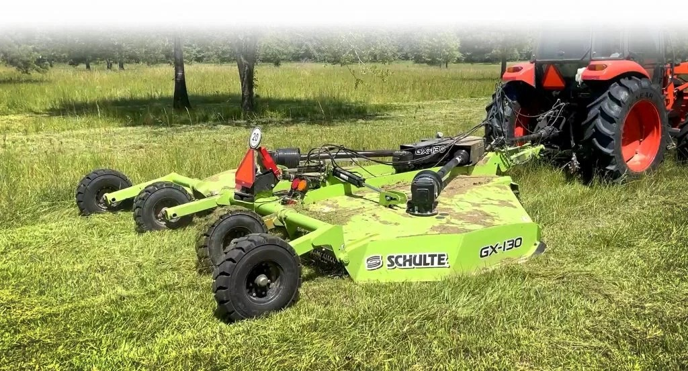
Schulte
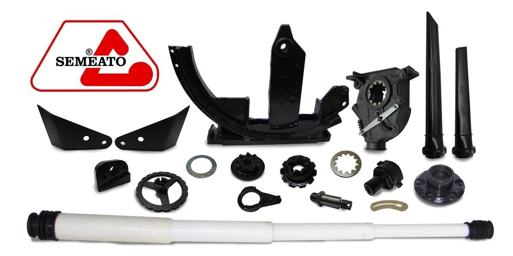
Semeato
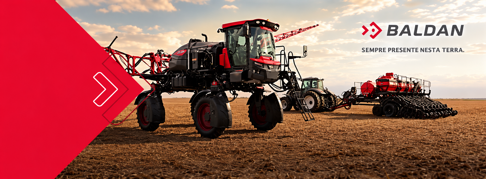